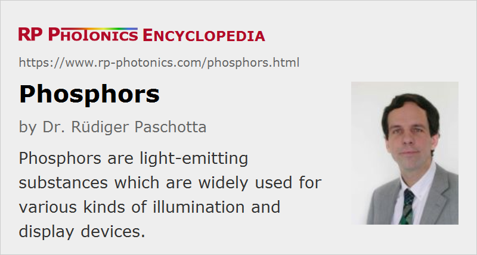

Phosphors
Definition: substances which exhibit luminescence, used mostly for illumination and displays
German: Phosphore
Categories: optical materials, vision, displays and imaging
How to cite the article; suggest additional literature
Author: Dr. Rüdiger Paschotta
Phosphors are substances which exhibit luminescence. Mostly, the term is used for technically used substances, applied in illumination and displays, for example, where visible light is needed.
Phosphor Substances
Frequently, a phosphor contains mainly a passive (not light-emitting) medium to which some activator substance is added with some concentration. In most cases, the activators are rare earth or transition metal ions, for example:
- Eu2+ in zinc sulfide (ZnS), BaMgAl10O17 (BAM) or ytterbium oxide-sulfide
- Eu3+ in YVO4 (vanadate)
- Mn2+, Cu+, Pb2+ or Ag+ in ZnS or (Zn,Cd)S
- Ce3+ in Y2SiO5 or Y3Al5O12 (YAG)
- Tb3+ in InBO3
Often, one indicates the dopant after a colon, e.g. Y3Al5O12:Ce. The doping concentration is optimized such that one obtains a sufficiently small absorption length for excitation light, but at the same time no excessive reabsorption of radiated light, nor substantial quenching by energy transfer processes.
One increasingly tries to avoid the use of various toxic elements such as beryllium, cadmium and thallium.
The host substance is usually a dielectric or semiconductor material with sufficiently large band gap. Sometimes, one adds another dopant for reducing the afterglow. Phosphors are often supplied in the form of fine powders consisting of crystallites with a suitably controlled range of particle sizes.
Semiconductors in LEDs and laser diodes, for example, are generally not called phosphors, although they also exhibit luminescence.
Recently, organic phosphors have been demonstrated, but so far one mostly uses inorganic phosphors.
A large number of different phosphor substances can be labeled with an internationally recognized “P” number system. For example, P4 phosphor based on silver-activated zinc cadmium sulfide has been used for black-and-white television sets; there is also a cadmium-free version containing copper and europium. Green P10 and other long-persistence phosphors are used for radar screens. Green P31 with much faster fluorescence decay is usable for oscilloscopes.
As phosphors generally exhibit substantial light absorption, they are used in relatively thin layers, so that most of the luminescent light can escape and be used. However, some finite thickness is required to obtain sufficient absorption of light or electrons used to excite the phosphor.
The emission of a phosphor is basically omnidirectional, but sometimes it is at least partly directional due to a reflecting metallic electrode layer, for example.
Excitation of Phosphors
Generally, the luminescence in a phosphor is associated with the release of energy from excited electronic states. The excitation can be done with different physical mechanisms:
- Some of them are excited by high-energy free electrons. The emission process is then called cathodoluminescence, which can be considered as a form of electroluminescence.
- In many other cases, the excitation is caused by incident light, which can be visible light or ultraviolet light. This kind of emission is called photoluminescence, or more specifically fluorescence or phosphorescence, depending on the decay time. Although the term phosphor seems to suggest that it produces phosphorescence, it is in fact fluorescence in most cases, but often not with particularly short decay times. Typical timescales are in the microsecond to millisecond region.
- In few cases, radioluminescence is utilized.
Essential Properties of Phosphors
Quite a number of different properties can be relevant for the use of phosphors:
- The shape of the luminescence spectrum determines the color appearance.
- The luminous efficacy determines how bright the appearance can be with a given excitation level. It can be degraded by various quenching mechanisms, which can e.g. involve crystal defects, surface effects or impurities. Even for the same type of phosphor, it can vary substantially, depending on the fabrication details.
- Phosphors can be optimized for different excitation mechanisms (see above).
- The limited lifetime (see below) can also vary substantially depend on the type of phosphor and the operation conditions.
- Phosphors for use in vacuum should exhibit low outgassing.
Applications of Phosphors
Fluorescent Lamps
In a fluorescent lamp, the emitted light is generated by a phosphor layer which is deposited on the inner side of a glass tube. The phosphor is excited by ultraviolet light, which is typically generated with a gas discharge in low-pressure mercury vapor.
In most cases, a fluorescent lamp produces white light rather than colored light. That is achieved with phosphors containing different emitting substances, emitting light in a different wavelength regions; the mixture is balanced such that overall one obtains white light with the desired color temperature. While daylight lamps produce relatively “cold” light with a high color temperature, similar to that of daylight at noon, one often prefers warm tone lamps with a lower color temperature, more similar to natural light in the evening.
Because the optical spectrum obtained with a mix of phosphor substances is not continuous, but exhibits multiple spectral regions with substantial emission, interrupted by significant gaps, ideal color rendering (a high CRI = color rendering index) is not achieved. There are phosphors with a more complex mixture of emitting substances, leading to better color rendering, but often with a lower conversion efficiency. For ordinary illumination purposes, that trade-off leads to lamps with reasonable, but not perfect color rendering and a relatively high luminous efficacy.
Light Emitting Diodes
Many light emitting diodes (LEDs) emit colored light, which is directly generated as electroluminescence in a p–n junction, where electrons and holes recombine. The semiconductor materials of those p–n junctions are not called phosphors.
However, mainly for illumination purposes one requires white LEDs, and phosphors are involved in those. The actual LED (based on InGaN) produces blue light, some of which is directly used for illumination, while another part of it is absorbed by some phosphor like Y3Al5O12:Ce3+, which produces light at longer wavelengths – often in the green to orange region (mostly yellow), so that overall one obtains a white color impression. LED phosphors can also contain SiAlON:Er2+ or substances with terbium and gadolinium. Similar to the situation with fluorescent lamps, there are trade-offs concerning the conversion efficiency and the color rendering index. For cheap white LEDs, one also frequently observes serious deviations from the wanted color appearance, which may be caused by non-ideal fabrication conditions.
Cathode Ray Tubes
For many years, cathode ray tubes (CRTs) have been used in most television devices, computer displays and oscilloscopes. Here, an electron beam with an electron energy of several kiloelectronvolts (keV) hits a phosphor layer deposited on the inner side of the vacuum tube, such that part of the generated luminescence is transmitted through the glass and can be seen. One usually uses a thin layer of aluminum deposited on the phosphor, which serves as an electrode and at the same time as a light reflector, but unfortunately also takes away a substantial part of the electron energy.
Monochrome screens contain only a single kind of phosphor, emitting light e.g. with green or orange color. Color screens typically contain three different kinds of phosphors, e.g. with red, green and blue emission, which are arranged in a regular pattern. A mechanism involving patterned masks allows one to send the electron beam specifically to spots containing the right kind of phosphor for the desired color.
Due to the rapid the acceleration of electrons in the phosphor, some amount of unwanted X-rays are generated. However, the resulting X-ray exposure of users is usually relatively weak.
Electroluminescent Displays
An electroluminescent display contains a thin phosphor layer, to which a relatively high voltage is applied with two electrodes. One electrode needs to be transparent or structured for extracting the generated light. Such devices can be used for backlights of liquid crystal displays, for example.
Image Intensifiers
Image intensifiers and image converters, as used mostly in night vision devices and in infrared viewers, contain a phosphor screen for converting the electron image back to a visible image. The incident electrons have an energy of several keV, similar to those in a cathode ray tube. Therefore, hundreds of photons can be emitted with a single incident electron. Therefore, some significant amount of image intensification (e.g. a factor of 50) is possible even without any electron multiplication process. However, modern devices typically contain a microchannel plate providing strong electron multiplication, so that the efficiency of the phosphor becomes less critical.
The phosphor layer is often deposited on a fiber-optic plate or fiber-optic taper, transferring and possibly transforming the image, either for direct viewing or for recording with an image sensor. The material is chosen for a high luminous efficacy (for direct viewing) or for achieving a maximum sensitivity with the image sensor.
Infrared Viewing Cards
For some laser viewing cards, one uses special phosphors which need to be “charged” by illumination with visible light, i.e., sunlight or artificial light. The material then generates a low level of phosphorescence (afterglow), which can hardly be recognized. However, when hit by infrared light, the material releases the energy stored during the charging process much more quickly, and the illuminated spot can be seen (often in orange color) with the naked eye. This visual impression lasts only until the stored energy has been exhausted; one then needs to recharge the card or just move the laser spot to another location which has not yet been used.
Radioluminescent Displays
There are phosphors (mostly based on zinc sulfide) to which a radioactive material such as radium is added, so that one obtains radioluminescence. Such materials can be used for wristwatches or for displays which emit a little light without requiring illumination or electric powering.
Lifetime of Phosphors
Phosphors generally exhibit a limited lifetime due to degradation processes which mainly occurred during operation. The resulting lifetimes differ very much between different phosphors, and also the involved degradation mechanisms. Some examples for typical mechanisms are shortly explained in the following:
- Rare earth and transition metals exhibit different charge states, and chemical reactions can change those. However, the electronic properties of those charge states are generally very different, and a phosphor works only with a specific state. For example, it may work with Eu2+ ions, but no more if those are oxidized to obtain Eu3+. Such reactions may involve external substances, e.g. humidity, or other substances in the phosphor layer. Diffusion processes (particularly at high operation temperatures) can play an important role in such chemical degradation.
- There can be an accumulation of crystal lattice damage, e.g. in the form of color centers, which allow for non-radiative recombination and therefore use the efficiency of light emission. Such damage can be induced by incident high-energy electrons, for example.
The degradation is usually much accelerated by operation with high emission intensities or at high ambient temperature. Note that there can be significant heating of a phosphor during operation, since the generated heat can often not easily be dissipated.
The degradation may simply result in a loss of luminous efficacy, or also in a shift of the color appearance.
Suppliers
The RP Photonics Buyer's Guide contains 1 supplier for phosphors.
Questions and Comments from Users
Here you can submit questions and comments. As far as they get accepted by the author, they will appear above this paragraph together with the author’s answer. The author will decide on acceptance based on certain criteria. Essentially, the issue must be of sufficiently broad interest.
Please do not enter personal data here; we would otherwise delete it soon. (See also our privacy declaration.) If you wish to receive personal feedback or consultancy from the author, please contact him e.g. via e-mail.
By submitting the information, you give your consent to the potential publication of your inputs on our website according to our rules. (If you later retract your consent, we will delete those inputs.) As your inputs are first reviewed by the author, they may be published with some delay.
Bibliography
| [1] | R. Paschotta, “Shortages of Rare Earth Materials – a Problem for Photonics?”, Photonics Spotlight 2014-06-27 |
See also: luminescence, color rendering index
and other articles in the categories optical materials, vision, displays and imaging
|  |
If you like this page, please share the link with your friends and colleagues, e.g. via social media:
These sharing buttons are implemented in a privacy-friendly way!